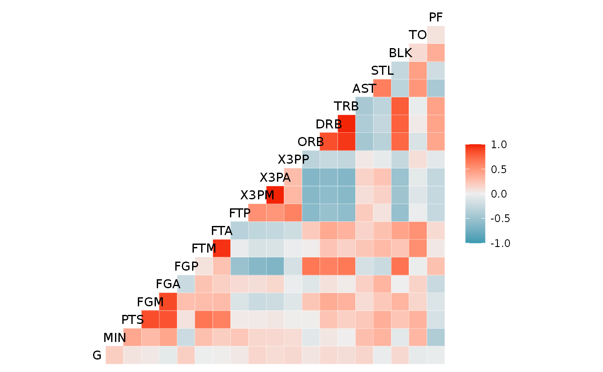
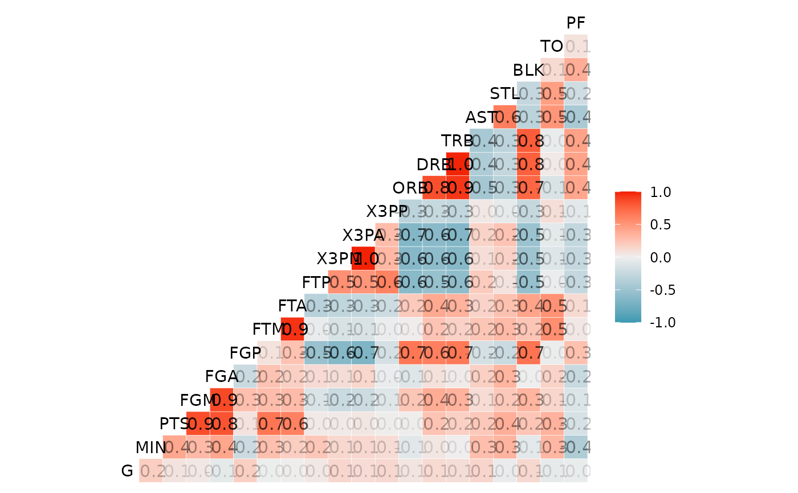
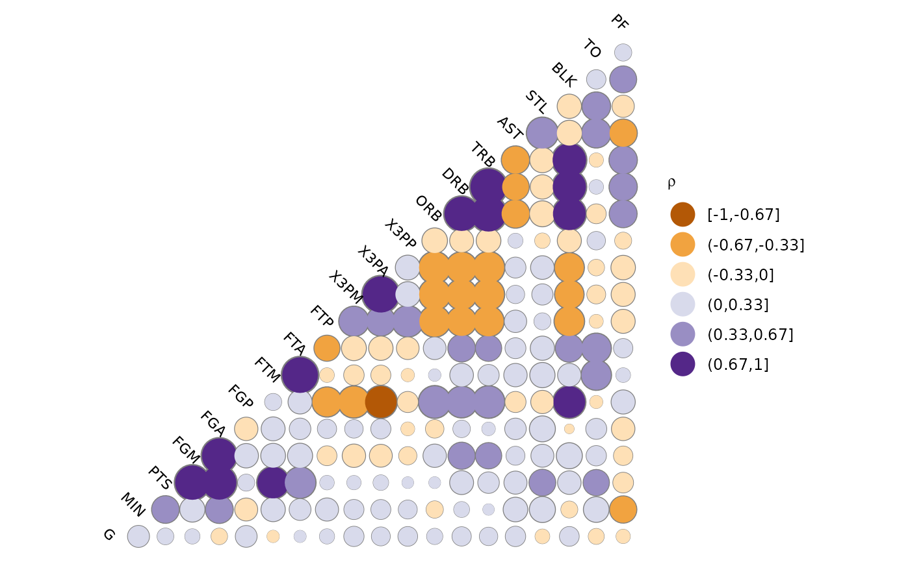
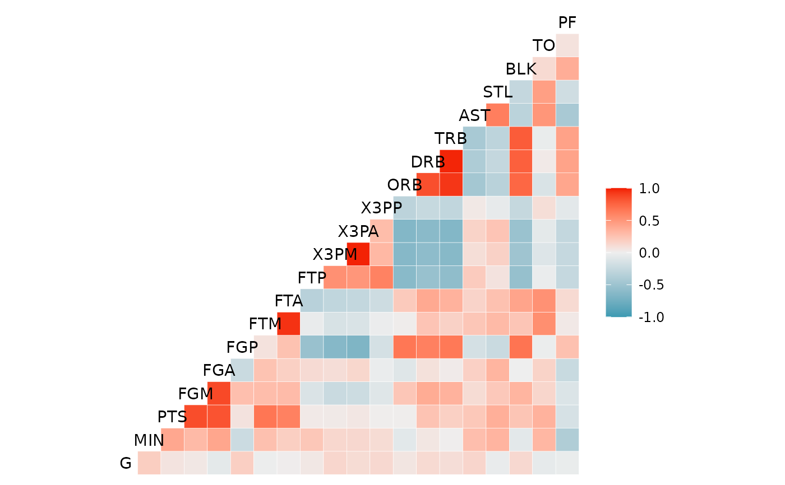

Function for making a correlation matrix plot, using ggplot2.
The function is directly inspired by Tian Zheng and Yu-Sung Su's
corrplot function in the 'arm' package.
Please visit https://github.com/briatte/ggcorr for the latest version
of ggcorr, and see the vignette at
https://briatte.github.io/ggcorr/ for many examples of how to use it.
ggcorr(
data,
method = c("pairwise", "pearson"),
cor_matrix = NULL,
nbreaks = NULL,
digits = 2,
name = "",
low = "#3B9AB2",
mid = "#EEEEEE",
high = "#F21A00",
midpoint = 0,
palette = NULL,
geom = "tile",
min_size = 2,
max_size = 6,
label = FALSE,
label_alpha = FALSE,
label_color = "black",
label_round = 1,
label_size = 4,
limits = c(-1, 1),
drop = is.null(limits) || identical(limits, FALSE),
layout.exp = 0,
legend.position = "right",
legend.size = 9,
...
)a data frame or matrix containing numeric (continuous) data. If any of the columns contain non-numeric data, they will be dropped with a warning.
a vector of two character strings. The first value gives the
method for computing covariances in the presence of missing values, and must
be (an abbreviation of) one of "everything", "all.obs",
"complete.obs", "na.or.complete" or
"pairwise.complete.obs". The second value gives the type of
correlation coefficient to compute, and must be one of "pearson",
"kendall" or "spearman".
See cor for details.
Defaults to c("pairwise", "pearson").
the named correlation matrix to use for calculations.
Defaults to the correlation matrix of data when data is
supplied.
the number of breaks to apply to the correlation coefficients,
which results in a categorical color scale. See 'Note'.
Defaults to NULL (no breaks, continuous scaling).
the number of digits to show in the breaks of the correlation
coefficients: see cut for details.
Defaults to 2.
a character string for the legend that shows the colors of the
correlation coefficients.
Defaults to "" (no legend name).
the lower color of the gradient for continuous scaling of the
correlation coefficients.
Defaults to "#3B9AB2" (blue).
the midpoint color of the gradient for continuous scaling of the
correlation coefficients.
Defaults to "#EEEEEE" (very light grey).
the upper color of the gradient for continuous scaling of the
correlation coefficients.
Defaults to "#F21A00" (red).
the midpoint value for continuous scaling of the
correlation coefficients.
Defaults to 0.
if nbreaks is used, a ColorBrewer palette to use
instead of the colors specified by low, mid and high.
Defaults to NULL.
the geom object to use. Accepts either "tile",
"circle", "text" or "blank".
when geom has been set to "circle", the minimum
size of the circles.
Defaults to 2.
when geom has been set to "circle", the maximum
size of the circles.
Defaults to 6.
whether to add correlation coefficients to the plot.
Defaults to FALSE.
whether to make the correlation coefficients increasingly
transparent as they come close to 0. Also accepts any numeric value between
0 and 1, in which case the level of transparency is set to that
fixed value.
Defaults to FALSE (no transparency).
the color of the correlation coefficients.
Defaults to "grey75".
the decimal rounding of the correlation coefficients.
Defaults to 1.
the size of the correlation coefficients.
Defaults to 4.
bounding of color scaling for correlations, set limits = NULL or FALSE to remove
if using nbreaks, whether to drop unused breaks from the
color scale.
Defaults to FALSE (recommended).
a multiplier to expand the horizontal axis to the left if
variable names get clipped.
Defaults to 0 (no expansion).
where to put the legend of the correlation
coefficients: see theme for details.
Defaults to "bottom".
the size of the legend title and labels, in points: see
theme for details.
Defaults to 9.
other arguments supplied to geom_text for
the diagonal labels.
Recommended values for the nbreaks argument are 3 to
11, as values above 11 are visually difficult to separate and are not
supported by diverging ColorBrewer palettes.
cor and corrplot in the
arm package.
# Small function to display plots only if it's interactive
p_ <- GGally::print_if_interactive
# Basketball statistics provided by Nathan Yau at Flowing Data.
dt <- read.csv("http://datasets.flowingdata.com/ppg2008.csv")
# Default output.
p_(ggcorr(dt[, -1]))

# Labeled output, with coefficient transparency.
p_(ggcorr(dt[, -1],
label = TRUE,
label_alpha = TRUE
))

# Custom options.
p_(ggcorr(
dt[, -1],
name = expression(rho),
geom = "circle",
max_size = 10,
min_size = 2,
size = 3,
hjust = 0.75,
nbreaks = 6,
angle = -45,
palette = "PuOr" # colorblind safe, photocopy-able
))

# Supply your own correlation matrix
p_(ggcorr(
data = NULL,
cor_matrix = cor(dt[, -1], use = "pairwise")
))
